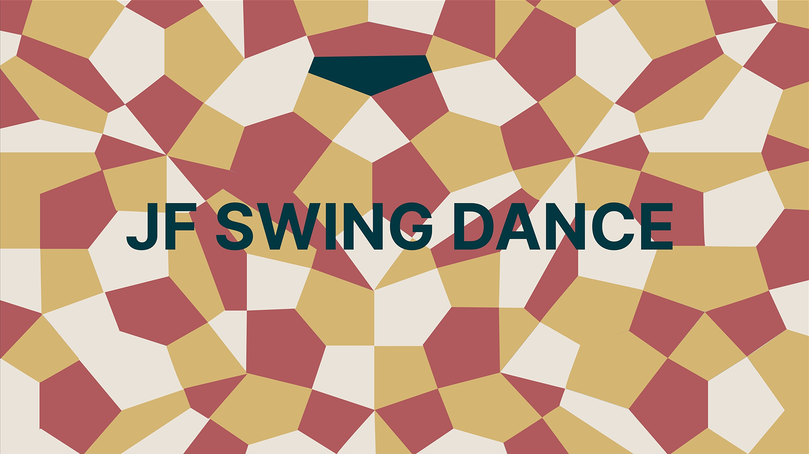

JF SWING Dance 是一個專注於搖擺舞蹈教學與推廣的品牌，致力於將1920年代的舞蹈文化帶入現代生活。
隨著復古文化的興起，年輕族群對於搖擺舞蹈的興趣日漸增加，但缺乏專業且現代化的教學平台。
建立獨特的視覺識別系統，融合復古元素與現代設計語言，展現品牌特色。
打造直觀且易於使用的介面，讓用戶能夠輕鬆瀏覽課程資訊並完成報名流程。
確保網站在各種設備上都能提供最佳的瀏覽體驗，實現響應式設計。
成功建立具有復古風格的現代化品牌形象，提升品牌識別度。
優化後的報名流程，使課程報名轉換率提升40%。
用戶滿意度調查顯示，95%的用戶對新網站的使用體驗表示滿意。
採用 HTML5、CSS3 和 JavaScript 實現動態效果，使用 Bootstrap 框架確保響應式設計。
使用 Figma 進行UI設計和原型製作，通過 Adobe Creative Suite 處理視覺素材。
使用 Git 進行版本控制，確保開發過程的穩定性和可追蹤性。